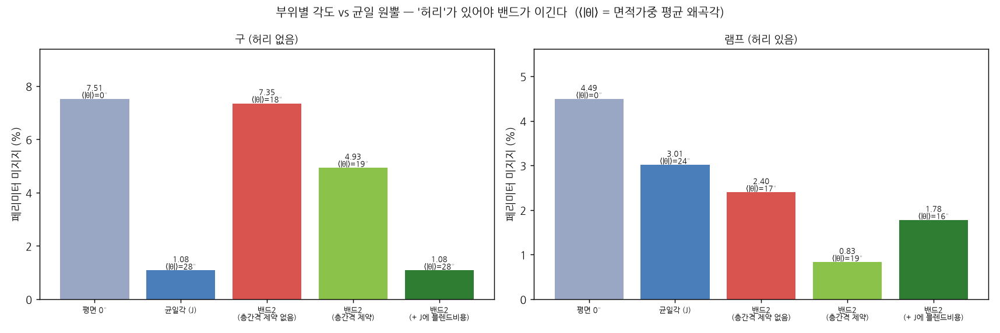
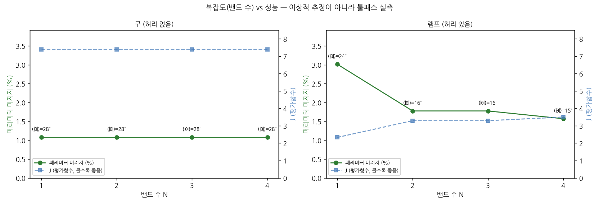
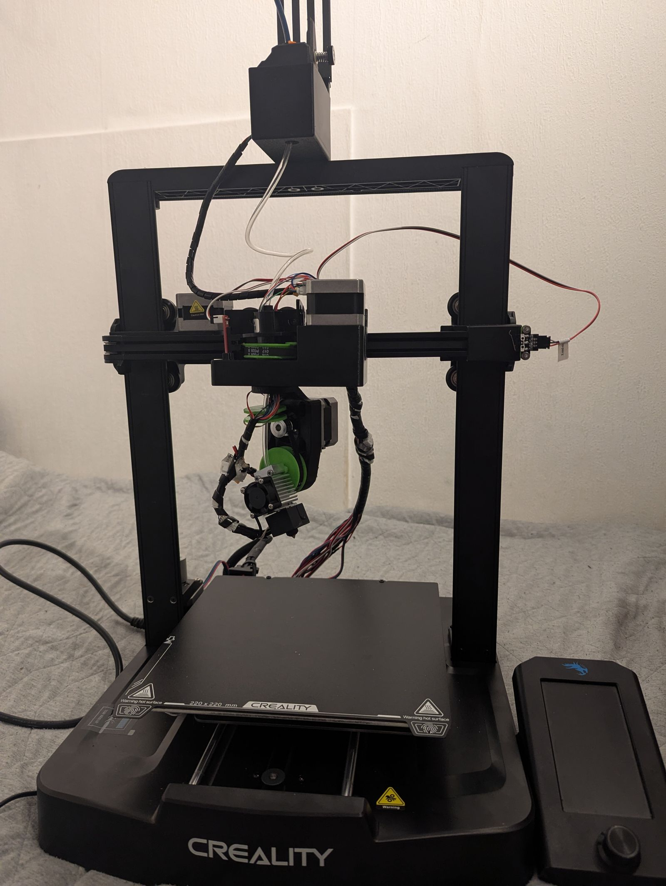
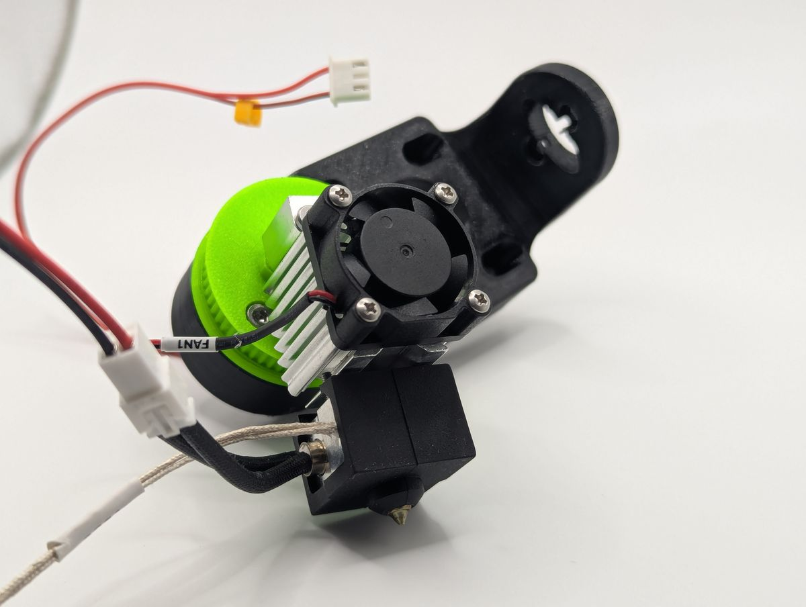
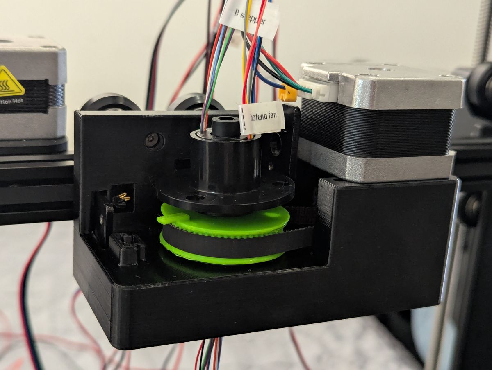
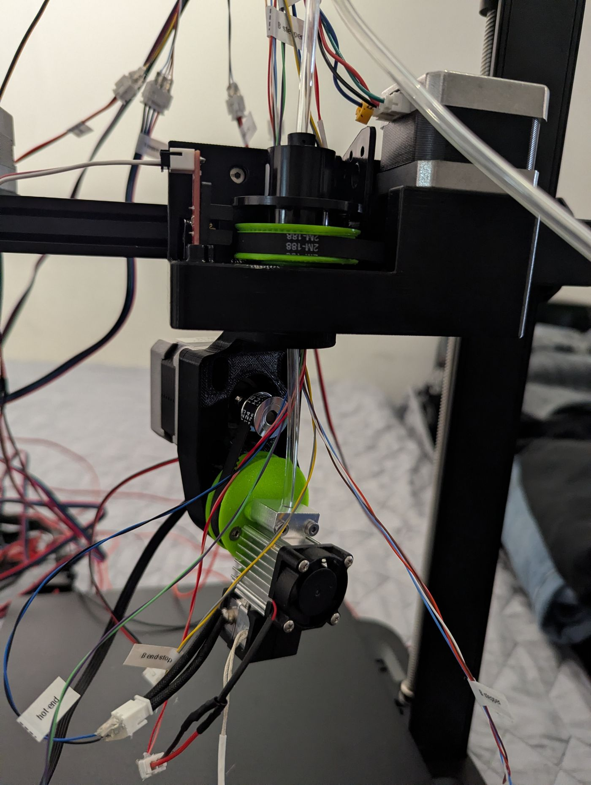
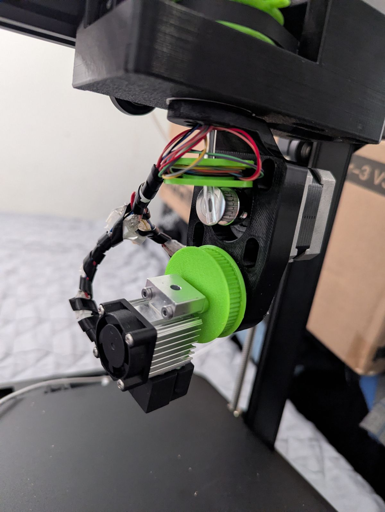
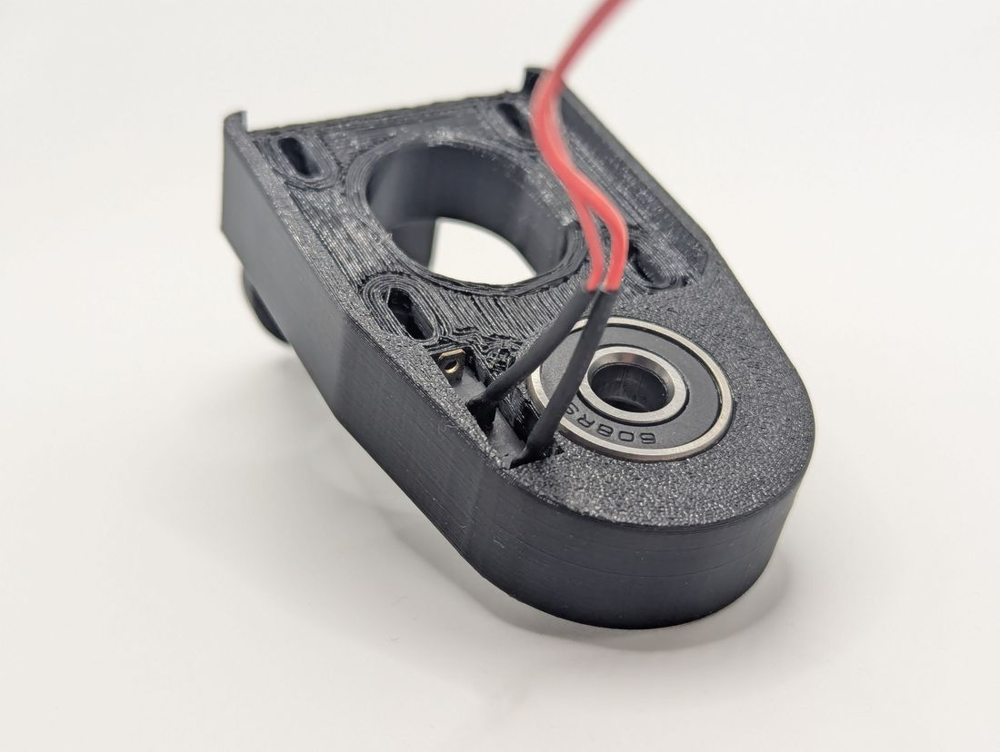

2026 과학영재 창의연구(R&E) 중간 성과공유회 · 서울과학고등학교
4축 3D 프린터의
적응형 원뿔 슬라이싱
STL 형상에 맞는 원뿔각을 자동으로, 가볍게, 투명하게
김재혁 · 나준우 · 김진우
지도교사 김주성
AI-017
해결한 것 → 지금 하는 것 → 다음에 할 것
발표의 뼈대
저번에 제기한 문제, 지금 어떻게 되었나
저번 발표에서 제기한 문제지금어디서
각도를 평가할 기준이 없었다
해결검증 계층 5층을 쌓았다
3쪽
모델 하나로만 확인했다
해결세 형상에서 이기는 조건을 찾았다
4쪽
코드가 따로 놀았다
해결STL→G-code 한 줄기로 합쳤다
5쪽
어떤 기계로 출력할지 정해지지 않았다
지금기준 기계를 정하고 설계를 읽는다
6~10쪽
실물 출력 데이터가 없었다
다음제작 여건이 아직 없다 — 계산으로 갈 수 있는 끝까지
12쪽
해결 검증용 코드 설계
하드웨어 없이 “맞다”를 세우는 법
툴패스 가상 검사기
예측과 재는 대상이 다른 독립 지표
못 하는 것 — 예측기와 같이 틀릴 가능성브라우저 독립 재구현
0점 0% 일치
못 하는 것 — 둘 다 같은 AI 도구로 작성사람 손계산
AI를 거치지 않는 유일한 경로
못 하는 것 — 전수 검사가 아님팀원 독립 구현 대조
0면 · 차이 1.4×10⁻¹⁴°
못 하는 것 — 둘이 같은 오해를 했을 가능성해결 다중 모델 검증
여러 형상에서 재보니, 이기는 조건이 있었다


이기는 조건 = ‘허리’
각도를 바꾸려면 전이 구간이 필요하고, 그 폭은 그 높이의 반경에 비례한다. 구는 어디나 뚱뚱해 전이가 높이의 73%를 먹는다.
팀 안의 이견도 측정으로
두 임계 규칙을 토론 대신 실측 순위상관으로 판정 — 같은 눈금에서 만났다.
안전판
결과가 최선 균일 원뿔보다 나쁠 수 없다. 회귀 테스트로 강제.
해결 통합 파이프라인
STL 하나를 넣으면 G-code까지
- 01
축 센터링
축 밖 모델은 각도가 무의미해진다
- 02
각도 결정
해석식으로 예측하고 J로 고른다
- 03
정변환
tanθ 선형 보간 → 이분법 없이 정확해
- 04
평면 슬라이싱
PrusaSlicer를 감싼다
- 05
역변환
오차 기준 적응 분할 L=2√(2rε)
- 06
G-code
자기기술 헤더 + 압출 종류 태그
- 07
검사·시각화
같은 파일을 독립으로 다시 평가
재발명하지 않았다
슬라이서는 외부 것을 쓰고, 우리는 앞뒤만 만든다.
손잡이는 한 곳에
튜닝 상수가 전부 config.py에 근거와 함께 있다.
가중치는 ‘창’으로
값을 찍지 않고 답이 바뀌는 구간을 쟀다.
지금 이번 단계의 핵심
출력할 기계를 정한다 — 3D 프린터 설계
기계가 없으면 상수가 전부 가정값이다
- 최대 안전 원뿔각 — 가정
- 노즐 충돌 기하 — 3축 가정
- G-code 축 이름·한계 — 가정
→
기준 기계를 Rep5x로 확정
- CAD·BOM·펌웨어가 전부 공개 — 숫자를 읽을 수 있다
- 연속 회전 C + 90° 넘는 틸트 B
- 기성 프린터 개조라 기구를 새로 설계하지 않는다
실물 제작은 지금 불가능하다. 그래서 이번 범위는 설계까지다 — 기계를 확정해 가정값을 실제 숫자로 바꾸고, 그 기계가 받는 형식으로 출력 경로를 다시 설계한다.
지금 기준 기계
Rep5x — 공개된 5축 개조 설계
rep5x.com
화면 재현
Open Source · GPL v3
Open-Source 5-Axis Printing
기성 데스크톱 프린터에 회전 2축을 더하는 개조 설계. CAD·BOM·펌웨어·조립 문서가 전부 공개되어 있다.

지금 설계 읽기
기계가 어떻게 생겼나




지금 설계 읽기
설계에서 우리 코드가 읽어야 할 것
b-arm.stl
부품 3D 모델을 불러오는 중…
드래그: 회전 · 휠: 확대
—
B암
v1.1.0역할

지금 코드 연결
기계가 정해지자 코드가 달라졌다
베드가 움직인다
- 펌웨어가 기구학을 안 한다 → 슬라이서가 기계좌표를 계산
- 회전축이 한 방향으로 누적 — 구 데모 약 149회전
헤드가 회전한다
- 펌웨어가 역기구학 수행 → 슬라이서는 노즐 끝 좌표 + 각도만
- 슬립링 덕분에 배선 감김 문제가 사라진다
- 한계가 실제 값이 된다: B ±135°, C ±360°
원뿔 레이어 → 5축 명령
B = theta_at(z) # 틸트 = 그 높이의 원뿔각
C = unwrap(phi, C_prev) # 요 = 방위각, 연속 누적
emit(f"G1 X{x} Y{y} Z{z} B{B} C{C} E{e}")노즐 끝 좌표를 그대로 쓴다 — 피벗 보정은 펌웨어가 한다.
B0.0°
C0.0°
θ(z)0.0°
G1 …
지금 남아 있는 문제
지금 걸려 있는 것
물리 검증 0건
제작이 불가능해 브리징·수축·접착은 여전히 미검증. 결론은 ‘경향’으로만 쓴다.
기구학 모듈 미구현
open5x.py는 베드 틸트 전제라 못 쓴다. 헤드 회전용은 설계만 되어 있다.
충돌 검사기가 3축
헤드가 기울면 히트블록·B암 전체가 충돌 기하에 들어와야 한다.
가변각 × 5축
θ(z)가 변하면 B도 계속 변한다. 지금 가변각은 3축 소각도에서만 된다.
모델 표본이 둘
튜닝 상수를 구·램프 두 개로 정했다. 표본이 늘면 재검토 대상.
블렌드 비용이 휴리스틱
선형 가중은 유도된 물리가 아니다. 근거를 더 세워야 한다.
다음 앞으로의 계획
계산으로 갈 수 있는 끝까지
Rep5x 기구학 모듈 구현·검증
설계만 되어 있는 rep5x.py를 짜고, 공개된 기계 파라미터로 출력 좌표를 손계산과 대조한다.
5축 충돌 기하
B암·핫엔드 실제 치수로 충돌 검사기를 다시 쓰고, 최대 안전각을 이 기계 값으로.
모델 표본 확대
허리 있는/없는 형상을 더 모아 튜닝 상수를 다시 잰다.
실물 출력
제작이 가능해지는 시점에 예측 → 검사기 → 실측 3단 대조를 완성한다.
출처
HARDWARE
프린터 설계
- Rep5x
Dennis Klappe · GPL v3
홈페이지 문구, 조립 사진, 3D 부품 모델, 기계 수치 - Marlin 5축 기구학
DerAndere · Rep5x-Marlin
- Open5x (CHI 2022)
Hong, F. et al. — 베드 틸트 비교 대상
PAPER
알고리즘 선행 연구
- RotBot
Wüthrich et al. — 원뿔 변환식은 이 연구의 것
- CurviSlicer · S³ · Neural Slicer
자동 곡면 방향 결정
- Wu 2020 외
복잡도–성능 곡선은 Wu 2020의 것
우리 축은 하나다 — 저들이 이산 방향을 고르는 자리에서 우리는 연속 원뿔각 θ(z)를 고른다.
CODE
저장소와 도구
- KJH-code/slicer
파이프라인·검증기·실험
- find_conical_angle
팀원의 독립 구현 — 검증 ⑤층
- PrusaSlicer · Three.js · Reveal.js
파이프라인과 이 발표가 쓰는 오픈소스
사진·3D 모델은 Rep5x(GPL v3)의 것이며 저작권은 원저작자에게 있다. 변환 절차는 저장소 NOTICE.md에 적었다.